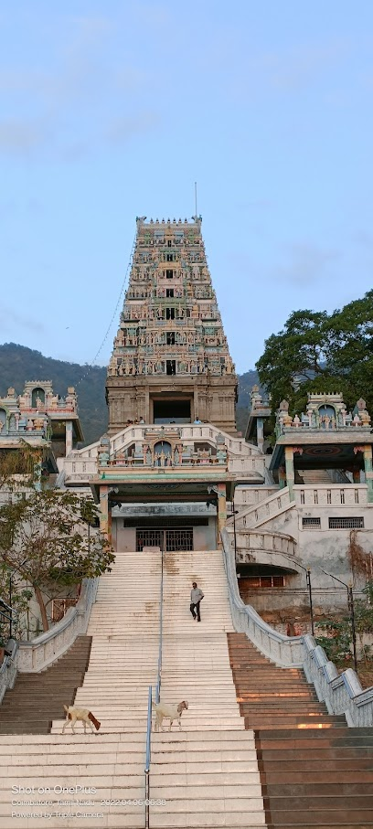

<!DOCTYPE html>
<html>
<head>
    
    <meta http-equiv="content-type" content="text/html; charset=UTF-8" />
    
        <script>
            L_NO_TOUCH = false;
            L_DISABLE_3D = false;
        </script>
    
    <style>html, body {width: 100%;height: 100%;margin: 0;padding: 0;}</style>
    <style>#map {position:absolute;top:0;bottom:0;right:0;left:0;}</style>
    <script src="https://cdn.jsdelivr.net/npm/leaflet@1.9.3/dist/leaflet.js"></script>
    <script src="https://code.jquery.com/jquery-1.12.4.min.js"></script>
    <script src="https://cdn.jsdelivr.net/npm/bootstrap@5.2.2/dist/js/bootstrap.bundle.min.js"></script>
    <script src="https://cdnjs.cloudflare.com/ajax/libs/Leaflet.awesome-markers/2.0.2/leaflet.awesome-markers.js"></script>
    <link rel="stylesheet" href="https://cdn.jsdelivr.net/npm/leaflet@1.9.3/dist/leaflet.css"/>
    <link rel="stylesheet" href="https://cdn.jsdelivr.net/npm/bootstrap@5.2.2/dist/css/bootstrap.min.css"/>
    <link rel="stylesheet" href="https://netdna.bootstrapcdn.com/bootstrap/3.0.0/css/bootstrap.min.css"/>
    <link rel="stylesheet" href="https://cdn.jsdelivr.net/npm/@fortawesome/fontawesome-free@6.2.0/css/all.min.css"/>
    <link rel="stylesheet" href="https://cdnjs.cloudflare.com/ajax/libs/Leaflet.awesome-markers/2.0.2/leaflet.awesome-markers.css"/>
    <link rel="stylesheet" href="https://cdn.jsdelivr.net/gh/python-visualization/folium/folium/templates/leaflet.awesome.rotate.min.css"/>
    
            <meta name="viewport" content="width=device-width,
                initial-scale=1.0, maximum-scale=1.0, user-scalable=no" />
            <style>
                #map_d29e7b640e80b84e4cfb25330c41f8cf {
                    position: relative;
                    width: 100.0%;
                    height: 100.0%;
                    left: 0.0%;
                    top: 0.0%;
                }
                .leaflet-container { font-size: 1rem; }
            </style>
        
</head>
<body>
    
    
            <div class="folium-map" id="map_d29e7b640e80b84e4cfb25330c41f8cf" ></div>
        
</body>
<script>
    
    
            var map_d29e7b640e80b84e4cfb25330c41f8cf = L.map(
                "map_d29e7b640e80b84e4cfb25330c41f8cf",
                {
                    center: [11.046743760020318, 76.85179988129246],
                    crs: L.CRS.EPSG3857,
                    zoom: 11,
                    zoomControl: true,
                    preferCanvas: false,
                }
            );

            

        
    
            var tile_layer_8147f66cf1ade5c9aa74bc2c3f924927 = L.tileLayer(
                "https://{s}.tile.openstreetmap.org/{z}/{x}/{y}.png",
                {"attribution": "Data by \u0026copy; \u003ca target=\"_blank\" href=\"http://openstreetmap.org\"\u003eOpenStreetMap\u003c/a\u003e, under \u003ca target=\"_blank\" href=\"http://www.openstreetmap.org/copyright\"\u003eODbL\u003c/a\u003e.", "detectRetina": false, "maxNativeZoom": 18, "maxZoom": 18, "minZoom": 0, "noWrap": false, "opacity": 1, "subdomains": "abc", "tms": false}
            ).addTo(map_d29e7b640e80b84e4cfb25330c41f8cf);
        
    
            var marker_96646dc4610d9b2babcb6a1e1bc37149 = L.marker(
                [11.046743760020318, 76.85179988129246],
                {}
            ).addTo(map_d29e7b640e80b84e4cfb25330c41f8cf);
        
    
            var icon_1abeb332c42aa498462a5c240c1e4c64 = L.AwesomeMarkers.icon(
                {"extraClasses": "fa-rotate-0", "icon": "globe", "iconColor": "white", "markerColor": "red", "prefix": "glyphicon"}
            );
            marker_96646dc4610d9b2babcb6a1e1bc37149.setIcon(icon_1abeb332c42aa498462a5c240c1e4c64);
        
    
        var popup_e592eccd4de271cac5e7a909b2387533 = L.popup({"maxWidth": "100%"});

        
            
                var html_d418ec2212eabb87483c8b5fda201602 = $(`<div id="html_d418ec2212eabb87483c8b5fda201602" style="width: 100.0%; height: 100.0%;">'<h1>MARUDHAMALAI</h1><a href=https://en.wikipedia.org/wiki/Marudhamalai>More Info</a><br><a href=https://goo.gl/maps/D69As3NZThqsrr987>360° View</a></div>`)[0];
                popup_e592eccd4de271cac5e7a909b2387533.setContent(html_d418ec2212eabb87483c8b5fda201602);
            
        

        marker_96646dc4610d9b2babcb6a1e1bc37149.bindPopup(popup_e592eccd4de271cac5e7a909b2387533)
        ;

        
    
    
            marker_96646dc4610d9b2babcb6a1e1bc37149.bindTooltip(
                `<div>
                     Marudhamalai
                 </div>`,
                {"sticky": true}
            );
        
    
            var marker_ead0510ab7f68f225dc562a03ae19374 = L.marker(
                [11.18835963779928, 77.26833935060526],
                {}
            ).addTo(map_d29e7b640e80b84e4cfb25330c41f8cf);
        
    
            var icon_b72006117bbf0bc0641f26db244aa357 = L.AwesomeMarkers.icon(
                {"extraClasses": "fa-rotate-0", "icon": "globe", "iconColor": "white", "markerColor": "red", "prefix": "glyphicon"}
            );
            marker_ead0510ab7f68f225dc562a03ae19374.setIcon(icon_b72006117bbf0bc0641f26db244aa357);
        
    
        var popup_b4100a1340bd8906738613bd3712c834 = L.popup({"maxWidth": "100%"});

        
            
                var html_37734667917aa4fd90fc53753b8e5899 = $(`<div id="html_37734667917aa4fd90fc53753b8e5899" style="width: 100.0%; height: 100.0%;">'<h1>Avinashi Lingeshwarar Temple(Tiruppukkozhiyur)</h1><a href=https://en.wikipedia.org/wiki/Tiruppukkozhiyur>More Info</a><br><a href=https://goo.gl/maps/kvL36VNyrk1YkjLV7>360° View</a></div>`)[0];
                popup_b4100a1340bd8906738613bd3712c834.setContent(html_37734667917aa4fd90fc53753b8e5899);
            
        

        marker_ead0510ab7f68f225dc562a03ae19374.bindPopup(popup_b4100a1340bd8906738613bd3712c834)
        ;

        
    
    
            marker_ead0510ab7f68f225dc562a03ae19374.bindTooltip(
                `<div>
                     Avinashi Lingeshwarar Temple
                 </div>`,
                {"sticky": true}
            );
        
    
            var marker_163d28689df30b10b8b0a37c3d4918f5 = L.marker(
                [10.976107870976024, 76.91472042176623],
                {}
            ).addTo(map_d29e7b640e80b84e4cfb25330c41f8cf);
        
    
            var icon_a84fe8ca9203cbc7b3a64c3426b181c9 = L.AwesomeMarkers.icon(
                {"extraClasses": "fa-rotate-0", "icon": "globe", "iconColor": "white", "markerColor": "red", "prefix": "glyphicon"}
            );
            marker_163d28689df30b10b8b0a37c3d4918f5.setIcon(icon_a84fe8ca9203cbc7b3a64c3426b181c9);
        
    
        var popup_3efcabac34da506fdab9cebdd97f80f5 = L.popup({"maxWidth": "100%"});

        
            
                var html_9664744e5c31ed5db2745b30b50b259f = $(`<div id="html_9664744e5c31ed5db2745b30b50b259f" style="width: 100.0%; height: 100.0%;">'<h1>Pattiswarar Temple</h1><a href=https://en.wikipedia.org/wiki/Perur_Pateeswarar_Temple,_Coimbatore>More Info</a><br><a href=https://goo.gl/maps/kEgvaBpxFJkpyDCT6>360° View</a></div>`)[0];
                popup_3efcabac34da506fdab9cebdd97f80f5.setContent(html_9664744e5c31ed5db2745b30b50b259f);
            
        

        marker_163d28689df30b10b8b0a37c3d4918f5.bindPopup(popup_3efcabac34da506fdab9cebdd97f80f5)
        ;

        
    
    
            marker_163d28689df30b10b8b0a37c3d4918f5.bindTooltip(
                `<div>
                     Pattiswarar Temple
                 </div>`,
                {"sticky": true}
            );
        
    
            var marker_e48c48a2779f0ca6e1e5fdfeaeff3a33 = L.marker(
                [10.993851296041719, 76.96370987943872],
                {}
            ).addTo(map_d29e7b640e80b84e4cfb25330c41f8cf);
        
    
            var icon_99c25990c6aa82921f96732af75c3433 = L.AwesomeMarkers.icon(
                {"extraClasses": "fa-rotate-0", "icon": "globe", "iconColor": "white", "markerColor": "red", "prefix": "glyphicon"}
            );
            marker_e48c48a2779f0ca6e1e5fdfeaeff3a33.setIcon(icon_99c25990c6aa82921f96732af75c3433);
        
    
        var popup_4dd4c66446853cfcd767b659ad7827a2 = L.popup({"maxWidth": "100%"});

        
            
                var html_080b0d57c2dff82bbe3fa490a295d7d0 = $(`<div id="html_080b0d57c2dff82bbe3fa490a295d7d0" style="width: 100.0%; height: 100.0%;">'<h1>Koniamman Temple</h1><a href=https://en.wikipedia.org/wiki/Koniamman_Temple,_Coimbatore>More Info</a><br><a href=https://goo.gl/maps/eXEyGYYG7LBEa21j9>360° View</a></div>`)[0];
                popup_4dd4c66446853cfcd767b659ad7827a2.setContent(html_080b0d57c2dff82bbe3fa490a295d7d0);
            
        

        marker_e48c48a2779f0ca6e1e5fdfeaeff3a33.bindPopup(popup_4dd4c66446853cfcd767b659ad7827a2)
        ;

        
    
    
            marker_e48c48a2779f0ca6e1e5fdfeaeff3a33.bindTooltip(
                `<div>
                     Koniamman Temple
                 </div>`,
                {"sticky": true}
            );
        
    
            var marker_06fce86c717a5dd712338ee014e79667 = L.marker(
                [10.97234157606457, 76.74039342176614],
                {}
            ).addTo(map_d29e7b640e80b84e4cfb25330c41f8cf);
        
    
            var icon_e48b2924626ac90c4c70fefa30896251 = L.AwesomeMarkers.icon(
                {"extraClasses": "fa-rotate-0", "icon": "globe", "iconColor": "white", "markerColor": "red", "prefix": "glyphicon"}
            );
            marker_06fce86c717a5dd712338ee014e79667.setIcon(icon_e48b2924626ac90c4c70fefa30896251);
        
    
        var popup_fe25d0c4044da4b97f8a2bc7171d2316 = L.popup({"maxWidth": "100%"});

        
            
                var html_0c0f65ab5ed8a7a05c88006effac6ff4 = $(`<div id="html_0c0f65ab5ed8a7a05c88006effac6ff4" style="width: 100.0%; height: 100.0%;">'<h1>Adiyogi Statue</h1><a href=https://en.wikipedia.org/wiki/Adiyogi_Shiva_statue>More Info</a><br><a href=https://goo.gl/maps/8uxGHWUTadHRbvLF7>360° View</a></div>`)[0];
                popup_fe25d0c4044da4b97f8a2bc7171d2316.setContent(html_0c0f65ab5ed8a7a05c88006effac6ff4);
            
        

        marker_06fce86c717a5dd712338ee014e79667.bindPopup(popup_fe25d0c4044da4b97f8a2bc7171d2316)
        ;

        
    
    
            marker_06fce86c717a5dd712338ee014e79667.bindTooltip(
                `<div>
                     Adiyogi Statue
                 </div>`,
                {"sticky": true}
            );
        
    
            var marker_2fe1b7c3500928616daf494c90c2e8d2 = L.marker(
                [11.027788626603515, 76.95018295060305],
                {}
            ).addTo(map_d29e7b640e80b84e4cfb25330c41f8cf);
        
    
            var icon_99c6a87479fbb88afdbcc454fe38b149 = L.AwesomeMarkers.icon(
                {"extraClasses": "fa-rotate-0", "icon": "globe", "iconColor": "white", "markerColor": "red", "prefix": "glyphicon"}
            );
            marker_2fe1b7c3500928616daf494c90c2e8d2.setIcon(icon_99c6a87479fbb88afdbcc454fe38b149);
        
    
        var popup_c43b6b649a30b8ee91fe43759edfef68 = L.popup({"maxWidth": "100%"});

        
            
                var html_af2273629b98cb4d276db7e9b37e8c6c = $(`<div id="html_af2273629b98cb4d276db7e9b37e8c6c" style="width: 100.0%; height: 100.0%;">'<h1>Sri Naga Sai Mandir</h1><a href=https://en.wikipedia.org/wiki/Naga_Sai_Mandir>More Info</a><br><a href=https://goo.gl/maps/gpMVHJGQnqnjvtm77>360° View</a></div>`)[0];
                popup_c43b6b649a30b8ee91fe43759edfef68.setContent(html_af2273629b98cb4d276db7e9b37e8c6c);
            
        

        marker_2fe1b7c3500928616daf494c90c2e8d2.bindPopup(popup_c43b6b649a30b8ee91fe43759edfef68)
        ;

        
    
    
            marker_2fe1b7c3500928616daf494c90c2e8d2.bindTooltip(
                `<div>
                     Sri Naga Sai Mandir
                 </div>`,
                {"sticky": true}
            );
        
    
            var marker_826d255f1714886db9f9eef0ca0430d6 = L.marker(
                [11.242604271073274, 76.96034417944212],
                {}
            ).addTo(map_d29e7b640e80b84e4cfb25330c41f8cf);
        
    
            var icon_c32a0866e529f372a3b67df57b4eb080 = L.AwesomeMarkers.icon(
                {"extraClasses": "fa-rotate-0", "icon": "globe", "iconColor": "white", "markerColor": "red", "prefix": "glyphicon"}
            );
            marker_826d255f1714886db9f9eef0ca0430d6.setIcon(icon_c32a0866e529f372a3b67df57b4eb080);
        
    
        var popup_765db78124087ec64b8ca14063a954f7 = L.popup({"maxWidth": "100%"});

        
            
                var html_03e15a4331e63fc646bfe684d685b8ff = $(`<div id="html_03e15a4331e63fc646bfe684d685b8ff" style="width: 100.0%; height: 100.0%;">'<h1>Karamadai Ranganathar Temple</h1><a href=https://en.wikipedia.org/wiki/Ranganathaswamy_temple,_Karamadai>More Info</a><br><a href=https://goo.gl/maps/8NTQkhKpgeFcjqLH7>Video</a></div>`)[0];
                popup_765db78124087ec64b8ca14063a954f7.setContent(html_03e15a4331e63fc646bfe684d685b8ff);
            
        

        marker_826d255f1714886db9f9eef0ca0430d6.bindPopup(popup_765db78124087ec64b8ca14063a954f7)
        ;

        
    
    
            marker_826d255f1714886db9f9eef0ca0430d6.bindTooltip(
                `<div>
                     Karamadai Ranganathar Temple
                 </div>`,
                {"sticky": true}
            );
        
    
            var marker_4d81e6c26f3cad03c2a01d7093083387 = L.marker(
                [10.993851296041719, 76.96370987943872],
                {}
            ).addTo(map_d29e7b640e80b84e4cfb25330c41f8cf);
        
    
            var icon_f3d74c32bee10da6e425698f03a00505 = L.AwesomeMarkers.icon(
                {"extraClasses": "fa-rotate-0", "icon": "globe", "iconColor": "white", "markerColor": "red", "prefix": "glyphicon"}
            );
            marker_4d81e6c26f3cad03c2a01d7093083387.setIcon(icon_f3d74c32bee10da6e425698f03a00505);
        
    
        var popup_7efb00f6e045261d73ff6add0bbe6a2a = L.popup({"maxWidth": "100%"});

        
            
                var html_20e2ce683509ae9557c2bd6ae9d8e978 = $(`<div id="html_20e2ce683509ae9557c2bd6ae9d8e978" style="width: 100.0%; height: 100.0%;">'<h1>Arulmigu Eachanari Vinayagar Temple</h1><a href=https://en.wikipedia.org/wiki/Eachanari_Vinayagar_Temple>More Info</a><br><a href=https://goo.gl/maps/xLoMo4wT1dhhdsg56>360° View</a></div>`)[0];
                popup_7efb00f6e045261d73ff6add0bbe6a2a.setContent(html_20e2ce683509ae9557c2bd6ae9d8e978);
            
        

        marker_4d81e6c26f3cad03c2a01d7093083387.bindPopup(popup_7efb00f6e045261d73ff6add0bbe6a2a)
        ;

        
    
    
            marker_4d81e6c26f3cad03c2a01d7093083387.bindTooltip(
                `<div>
                     Arulmigu Eachanari Vinayagar Temple
                 </div>`,
                {"sticky": true}
            );
        
    
            var marker_5441cefc07ca44508ceaba06f874b1e6 = L.marker(
                [11.006931700768208, 76.97774468838284],
                {}
            ).addTo(map_d29e7b640e80b84e4cfb25330c41f8cf);
        
    
            var icon_1688c445ef90ac69bc3fe8d8a0dc0dff = L.AwesomeMarkers.icon(
                {"extraClasses": "fa-rotate-0", "icon": "globe", "iconColor": "white", "markerColor": "red", "prefix": "glyphicon"}
            );
            marker_5441cefc07ca44508ceaba06f874b1e6.setIcon(icon_1688c445ef90ac69bc3fe8d8a0dc0dff);
        
    
        var popup_f4e828fa358b2e4d2bd3a9e3d2bba0da = L.popup({"maxWidth": "100%"});

        
            
                var html_e96efcafec4fb06ba09d06656e7bbe8d = $(`<div id="html_e96efcafec4fb06ba09d06656e7bbe8d" style="width: 100.0%; height: 100.0%;">'<h1>Gedee Car Museum</h1><a href=http://gedeecarmuseum.com>More Info</a><br><a href=https://goo.gl/maps/Po7u3DjC1Aect9Gi7>360° View</a></div>`)[0];
                popup_f4e828fa358b2e4d2bd3a9e3d2bba0da.setContent(html_e96efcafec4fb06ba09d06656e7bbe8d);
            
        

        marker_5441cefc07ca44508ceaba06f874b1e6.bindPopup(popup_f4e828fa358b2e4d2bd3a9e3d2bba0da)
        ;

        
    
    
            marker_5441cefc07ca44508ceaba06f874b1e6.bindTooltip(
                `<div>
                     Gedee Car Museum
                 </div>`,
                {"sticky": true}
            );
        
    
            var marker_df932a734c8bf0991caae001d00ee7f4 = L.marker(
                [11.016839060520342, 76.94598266594751],
                {}
            ).addTo(map_d29e7b640e80b84e4cfb25330c41f8cf);
        
    
            var icon_2d0d3e1e819db33fbf7912283e8dccca = L.AwesomeMarkers.icon(
                {"extraClasses": "fa-rotate-0", "icon": "globe", "iconColor": "white", "markerColor": "red", "prefix": "glyphicon"}
            );
            marker_df932a734c8bf0991caae001d00ee7f4.setIcon(icon_2d0d3e1e819db33fbf7912283e8dccca);
        
    
        var popup_2191710ca3c7431f46c5e72af7a777d3 = L.popup({"maxWidth": "100%"});

        
            
                var html_363c04458dd80d2d1323f1b0e91b8f01 = $(`<div id="html_363c04458dd80d2d1323f1b0e91b8f01" style="width: 100.0%; height: 100.0%;">'<h1>Gass Forest Museum</h1><a href=https://en.wikipedia.org/wiki/Gass_Forest_Museum>More Info</a><br><a href=https://goo.gl/maps/PeprRwNAPT4ejfw2A>360° View</a></div>`)[0];
                popup_2191710ca3c7431f46c5e72af7a777d3.setContent(html_363c04458dd80d2d1323f1b0e91b8f01);
            
        

        marker_df932a734c8bf0991caae001d00ee7f4.bindPopup(popup_2191710ca3c7431f46c5e72af7a777d3)
        ;

        
    
    
            marker_df932a734c8bf0991caae001d00ee7f4.bindTooltip(
                `<div>
                     Gass Forest Museum
                 </div>`,
                {"sticky": true}
            );
        
    
            var marker_13a557ed2f190f482aba7c18313128f6 = L.marker(
                [11.034987120406678, 77.0323624064224],
                {}
            ).addTo(map_d29e7b640e80b84e4cfb25330c41f8cf);
        
    
            var icon_147085c241f2786177c6b75ff8f238ce = L.AwesomeMarkers.icon(
                {"extraClasses": "fa-rotate-0", "icon": "globe", "iconColor": "white", "markerColor": "red", "prefix": "glyphicon"}
            );
            marker_13a557ed2f190f482aba7c18313128f6.setIcon(icon_147085c241f2786177c6b75ff8f238ce);
        
    
        var popup_e3de818f0eb12982225f6adc2eaec017 = L.popup({"maxWidth": "100%"});

        
            
                var html_780718b475ecd579e3319dcdee484051 = $(`<div id="html_780718b475ecd579e3319dcdee484051" style="width: 100.0%; height: 100.0%;">'<h1>Kasthuri Sreenivasan Art Gallery & Textile Museum</h1><a href=https://www.kasthurisreenivasanartgallery.com>More Info</a><br><a href=https://goo.gl/maps/yY6EoPuPe5kHcogN6>360° View</a></div>`)[0];
                popup_e3de818f0eb12982225f6adc2eaec017.setContent(html_780718b475ecd579e3319dcdee484051);
            
        

        marker_13a557ed2f190f482aba7c18313128f6.bindPopup(popup_e3de818f0eb12982225f6adc2eaec017)
        ;

        
    
    
            marker_13a557ed2f190f482aba7c18313128f6.bindTooltip(
                `<div>
                     Kasthuri Sreenivasan Art Gallery & Textile Museum
                 </div>`,
                {"sticky": true}
            );
        
</script>
</html>